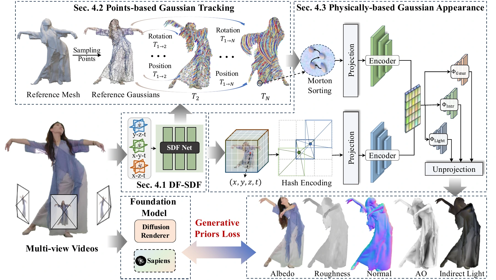

IEEE TPAMI 2026
LUMA4D
Generative Prior-Guided Relightable Volumetric Performance Reconstruction with Disentangled Motion-Appearance Gaussians
Inspect a lighting setup
Dynamic Mesh Results
Watch the folds of a skirt or the outline of a raised arm. Each gray mesh shows the surface reconstructed for that frame, with its reference video alongside.
Tracking Results
The colored trails trace the motion of sparse Gaussians across frames. The clip first shows their paths against black, then overlays them on the input videos so you can follow each movement.
Reconstructing a performance
LUMA4D reconstructs people in motion from multiview video, so their performances can be rendered from new viewpoints and under new lighting.
- Dynamic geometry
- A dynamic signed distance field recovers the performer’s surface. The mesh from the reference frame provides the starting points for motion tracking.
- Gaussian tracking
- Sparse motion Gaussians follow the performer across frames. A denser set of appearance Gaussians is attached to them to capture details that change with pose.
- Physically based appearance
- Geometry and material priors guide the rendering model. It accounts for light visibility and indirect illumination when estimating how the performer reflects light.


Research film
Explore the supplementary video chapter by chapter, from reconstructed views to geometry and motion tracking.
Supplementary video / 3:56Open MP4